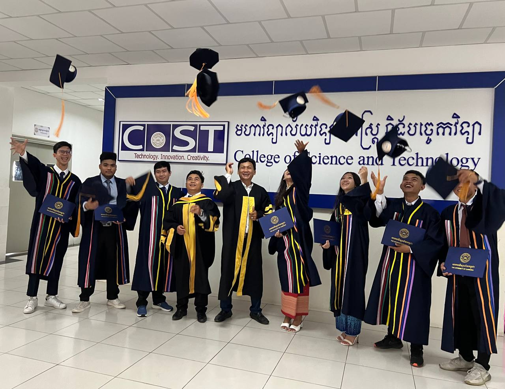
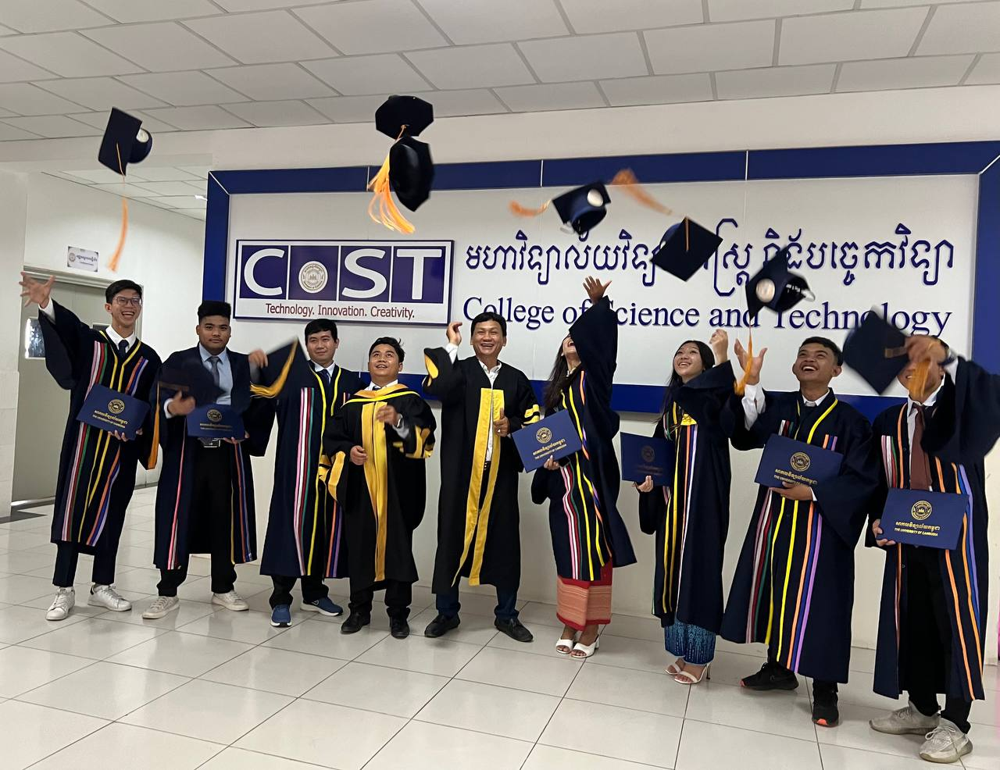
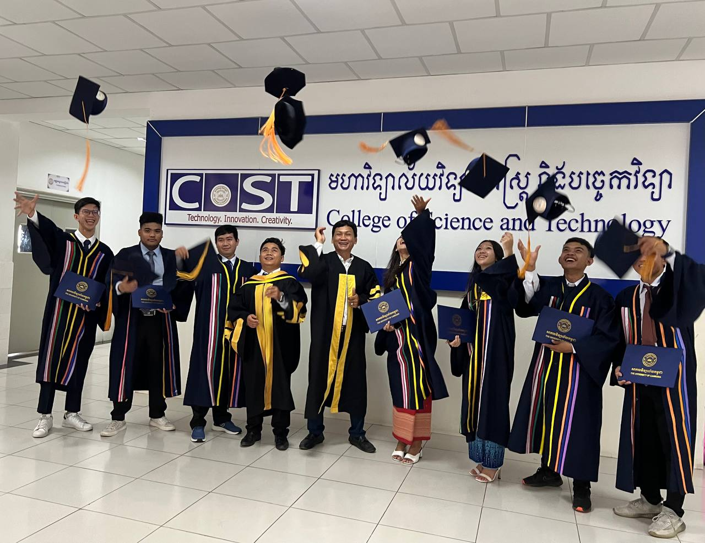

ស្វាគមន៍មកកាន់មហាវិទ្យាល័យវិទ្យាសាស្ត្រ និងបច្ចេកវិទ្យានៃសាកលវិទ្យាល័យកម្ពុជា។ សម្រាប់ប្អូនៗសិស្សានុសិស្ស ដែលមានបំណងចង់បន្តការសិក្សាថ្នាក់បរិញ្ញាបត្ររង និងថ្នាក់បរិញ្ញាបត្រ។ សូមចុះឈ្មោះជាមួយយើងឥឡូវនេះ ឬអាចអញ្ជើញមកកាន់សាកលវិទ្យាល័យផ្ទាល់ក៏បាន។ Welcome to College of Science and Technology of The University of Cambodia. For everyone who wishes to pursue for any AA and BA degrees of the study programs, please register now or visit the campus of The University of Cambodia.
